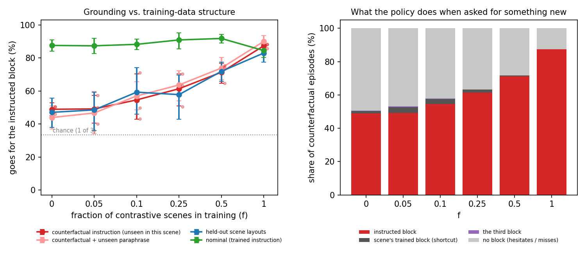
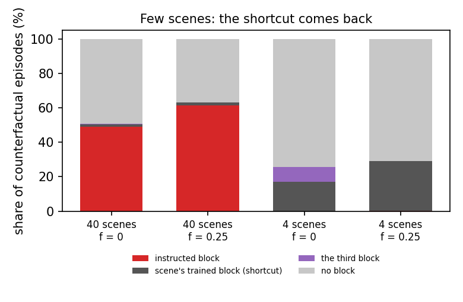
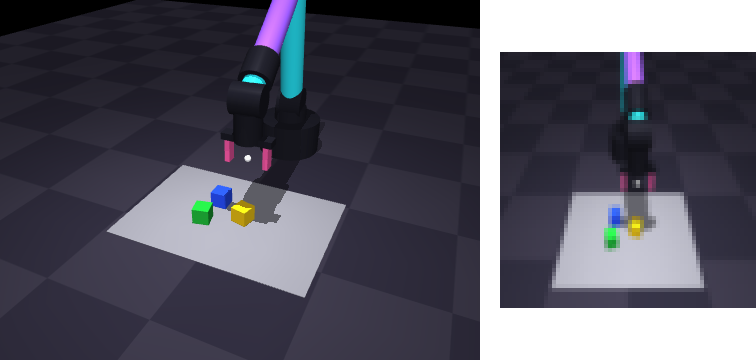

Preprint 2026 · pre-registered · every episode public
When Do Robot Policies Learn to Listen?
A Controlled, Pre-Registered Study of Training-Data Structure and Language Grounding
Independent researcher

The question
Vision-language-action robot policies often ignore what you tell them: change the instruction but keep the scene, and they do the task they were trained on in that scene. The usual explanation is the data. Each scene in a robot dataset comes with only one or a few tasks, so the image already tells the policy what to do. That explanation had not been tested causally, because nobody can retrain a big VLA on different data. So this study builds a small world where it can be retrained. Visuomotor policies are trained from scratch with the data budget, expert, architecture and recipe held fixed, and exactly one thing changes: the fraction f of contrastive scenes, demonstrated with several different instructions.
Findings
- Grounding transfers. Contrastive data in some scenes makes the policy follow instructions in other scenes that never had any. Nominal skill does not drop.
- Small doses do nothing. Two to four contrastive scenes have no detectable effect; ten do.
- The policies hesitate rather than take the shortcut. The first pre-registered hypothesis failed: the scene's trained block is taken in only 1.4% of counterfactual episodes. Instead the gripper descends about 5 cm from the instructed block, pulled toward the trained one, and misses.
- With few scenes, the familiar VLA failure comes back. In an exploratory experiment with 4 scenes instead of 40, counterfactual grounding drops to 0%, the shortcut rises to 17%, and one contrastive scene out of four does not help.
| Contrastive scenes f | 0 | 0.05 | 0.1 | 0.25 | 0.5 |
|---|---|---|---|---|---|
| Follows a counterfactual instruction | 48.9% | 49.1% | 54.6% | 61.3% | 71.3% |
| vs. f = 0 (run-level bootstrap, Holm) | p = 0.53 | p = 0.53 | p = 0.033 | p < 1e-4 |
Measured in scenes that were only ever demonstrated with one target in all conditions, asking for a block that scene was never demonstrated with. The upshot: language blindness depends on whether the scene is easier to learn than the language, and the fix is contrastive data spread across many scenes.

Abstract
Language-conditioned robot policies often ignore their instructions and execute whatever task they learned for the scene in front of them. The usual explanation is the structure of robot datasets, in which a scene co-occurs with only one or a few tasks. This explanation has not been tested causally. We train visuomotor imitation policies from scratch in a controlled simulated pick-up task. Total data (1200 demonstrations), expert, architecture and training recipe are held fixed, and the only variable is the fraction f of contrastive scenes, demonstrated with several instructions. We then ask the policies for blocks that a scene was never demonstrated with. Following a pre-registered protocol, we find four things. (i) Contrastive data in some scenes transfers grounding to others. The counterfactual grounding rate rises monotonically from 48.9% at f = 0 to 61.3% at f = 0.25 (p = 0.033, Holm) and 71.3% at f = 0.5 (p < 10−4), with no loss in nominal success. (ii) Small doses, two to four contrastive scenes, have no detectable effect. (iii) Contrary to our pre-registered hypothesis, failures at f = 0 are rarely shortcut executions (1.4%). They are hesitations: the gripper descends about 5 cm from the instructed block, displaced toward the scene's trained block. (iv) In an exploratory experiment with only four scenes, where memorizing scenes is easy, the familiar VLA failure appears. Grounding collapses to 0%, the shortcut rate rises to 17%, and one contrastive scene out of four does not help. Language blindness therefore depends on how easy the scene shortcut is to learn relative to the language, and remedies need contrastive data spread across many scenes.
How it was done

- Pre-registered. Hypotheses, metrics and the analysis plan were committed before any experiment (commit
39bf011, tagprereg-39bf011); every later change is logged in a dated deviations section. The repository was published after the experiments finished, so this timestamp comes from the git history, not from a public registry. - Controlled. 40 scene templates with colour-balanced default targets, nested contrastive sets, and exactly 1200 demonstrations per condition, sampled from one shared expert pool.
- Policy. A CNN with FiLM conditioning from a frozen MiniLM sentence encoder, ACT-style action chunking with temporal ensembling, and a 64×64 camera. The arm, IK and gripper come from ARMageddon and YOINK.
- Evaluation. 660 fixed episodes per run, 3 seeds per condition, 24 runs in total plus the pilot. Two-level bootstrap CIs, run-level tests with Holm correction, and the pre-registered logistic regression. Every per-episode record is in the repository.
Cite
@misc{zhambakin2026listen,
author = {Zhambakin, Anuar},
title = {When Do Robot Policies Learn to Listen? A Controlled, Pre-Registered
Study of Training-Data Structure and Language Grounding},
year = {2026},
howpublished = {Preprint},
url = {https://github.com/nonberw/listen}
}